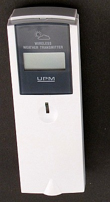

Some years ago we bought a weather station at a local shop. At that time it was one of the first weather stations with a wireless sensor, but according to todays standards it is nothing special: An indoor unit that displays temperature indoor/outdoor, humidity, sunrise/sunset as well as time. For measuring the outdoor temperature and humidity an external sensor unit was provided, the WT-440H.
After doing some google research it appeared that the sensor unit was manufactured by UPM/Esic. My original unithas to be at least 15 years old, and probably today there are newer and better units available. However when I searched for WT-440 on eBay I found that even today there are some people selling the sensor unit both as a separate sensors and in combination with a weather station.
The price that you will probably pay is around $ 8.00 for the unit alone excluding shipment to your country.
I decided to buy another 2 remote sensors, as they will work with my small weather station and also provide temperature and humidity readings to my Raspberry PI based LamPI application.
The WT-400H is a basic sensor, it only collects and sends temperature and humidity data to the weather station receiver (or to your Raspberry). However, for a lot of applications this is just good enough. And although this weather station transmitter is designed to work with a matching weather station it will do perfect in and outside the house for gathering temperature and humidity statistics.
As you see on the picture it will isplay temperature and humidity also on a tiny LCD iplay on the sensors unit. In practice though this does not make much sense as I will not walk outside just to read the sensor data...
Well, actually the first question would be: Will we store the gathered data for analysis or display at a later moment in time? If we are only interested in the last temperatur of humidity measured than the answer is simple: Just discard everything and we're good to go. But this sounds stupid if we have a computer at hand with close to 16Gb of total storage...
At first I was determined to store all the gathered data into a MSQL database but later I decided that this was overkill and actually made no sense at all!! Alternatively, it make much more sense to store all measured datapoint in a flat file appending every new value as it comes in with a date/time tag. With that, the daemon can store some data on a days/week/months basis and the user can run his/her statistics with the data in the file (rrdtool with optional Excel oxport will do nicely!)